简介
https://juejin.cn/post/6844904198773932039
https://zhuanlan.zhihu.com/p/97403330
Git是什么？
Git是目前世界上最先进的分布式版本控制系统。
工作原理 / 流程：
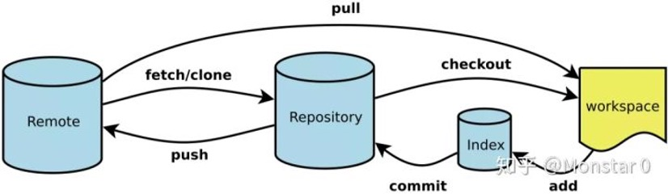
- Workspace：工作区
- Index / Stage：暂存区
- Repository：仓库区（或本地仓库）
- Remote：远程仓库
使用步骤
设置用户名和邮箱
点击”Git Bash Here “以打开Git命令行窗口:
1 | $ git config --global user.name "用户名" |
设置好用户信息，当进行项目修改的时候就会记录用户名
配置SSH 密钥
输入命令：
1 | ssh-keygen -t rsa -C "注册邮箱" |
之后会要求确认路径和输入密码，我们这使用默认的一路回车就行。
找到id_rsa.pub文件。
成功的话会在 ~/ 下生成 .ssh 文件夹，进去，打开 id_rsa.pub，复制里面的 key。
回到 github 上，进入 Account => Settings（账户配置）找到ssh密钥栏，然后将复制的密钥黏贴。
验证是否成功
输入以下命令：
1 | $ ssh -T git@github.com |
结果：Hi xxxx! You’ve successfully authenticated, but GitHub does not provide shell access.
然后克隆目录到新建的目录中：
1 | $ git clone ssh地址 |
线上的仓库ssh和https地址可以在clone和download中查看
创建目录并初始化
- 使用命令： mkdir 目录 创建目录；
- 使用命令：cd 目录 进入创建的目录；
- 进入指定的目录之后，执行命令： git init 初始化目录。
即让Git知道需要他来管理这个目录，执行后，打开这个项目目录下，点击隐藏目录你会发现多了一个.git文件夹。不能删除，也不能随意更改。到这里就可以在里面进行开发。
git add将工作区文件添加到缓冲区
使用命令 git add 可以添加一个文件，也可以同时添加多个文件。
- 语法一：$ git add 文件名
- 语法二：$ git add 文件名1 文件名2 文件名3 ……
- 语法三：$ git add . 【添加当前目录到缓存区中】
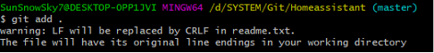
git commit提交到版本库
使用命令：
1 | $ git commit -m "注释内容" |
如果创建了新的文件，从add开始，重复上述操作即可。如果修改了已提交的文件内容，再从add开始重新提交就好了。这里的提交等操作只是提交到Git本地仓库。
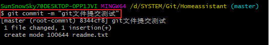
git status检查是否还有文件要提交（非必须）
使用命令：
1 | git status |
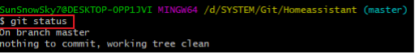
说明没有任何文件未提交，但是我现在继续来改下readme.txt内容，比如我在下面添加一行内容，继续使用git status来查看下结果，如下：
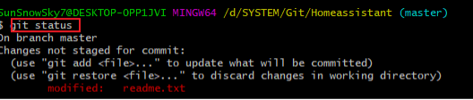
- 上面的命令告诉我们 readme.txt文件已被修改，但是未被提交的修改。把文件添加到版本库中。
- 首先要明确下，所有的版本控制系统，**只能跟踪文本文件的改动，比如txt文件，网页，所有程序的代码等，Git也不列外，** 版本控制系统可以告诉你每次的改动，**但是图片，视频这些二进制文件，虽能也能由版本控制系统管理，但没法跟踪文件的变化，** 只能把二进制文件每次改动串起来，也就是知道图片从1kb变成2kb，但是到底改了啥，版本控制也不知道。
git diff修改文件对比（非必须）
接着上面的操作，使用命令：
1 | git diff 文件名 |
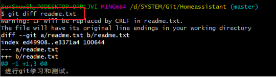
然后使用git add 和git commit进行提交操作。
版本回退（非必须）
接着上面的2.6和2.7的改动，此次在文件中又添加了一行文本。也就是现在已经有三个版本了。
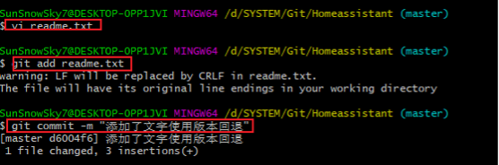
使用git log 查看历史版本
使用git log 命令查看最近三次的版本。
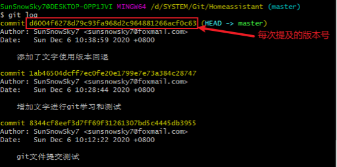
git log命令显示从最近到最远的显示日志，我们可以看到最近三次提交。
- 如果嫌上面显示的信息太多的话，我们可以使用命令
1 | git log --pretty=oneline |
那么如果要回退到上上个版本只需把HEAD^ 改成 HEAD^^ 以此类推。
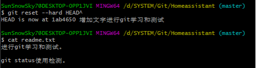
那如果要回退到前100个版本的话，使用上面的方法肯定不方便，我们可以使用下面的简便命令操作即可：
1
git reset --hard HEAD~100
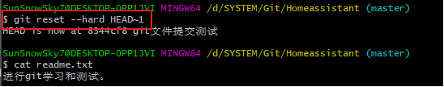
注意：HEAD^ 估计是代指上个版本的版本号。实际有用的命令是git reset –hard 版本号
回退到最新版本
如果按照2.8.2 我们可以回退到历史的版本，但是如果想再回到现在的最新的版本。就可以通过版本号来回退。
首先使用命令：git reflog来获取最新版本的版本号。
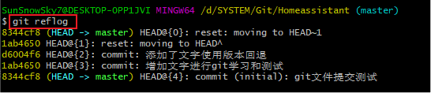
注意：最新版本，一般情况下在head{1}里面，根据后面注释来选择。
根据git reflog 可以看到最新版本的版本号是：dd6004f6.
然后使用命令：git reset –hard 版本号 来回退最新版本
在得知来最新版本号之后，就可以根据命令git reset –hard 版本号来回退到最新版本。
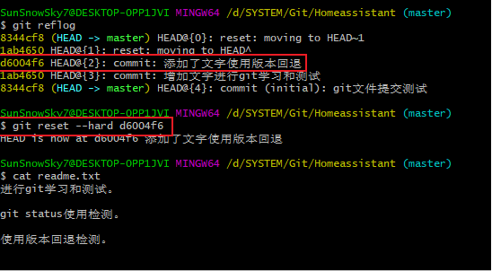
#####################################
git branch 查看分支
1 | git branch #查看本地分支 |
git checkout 切换分支
1 | git checkout xxxx #切换到xxxx分支 |
笔记：
如果同一个分支有好多个同事同时开发，需要使用local配置。
配置局部用户名和邮箱有两种方式。
方式1:
1 | git config --local user.name 'xxxxx' |
方式2:
将远程的仓库先git clone下来，然后进入到仓库的目录里。修改 .git/config在末尾添加下面内容
1 | [user] |
无论采用何种方式修改添加，都可以使用下面的命令查询是否修改成功：
1 | git config --list --local |